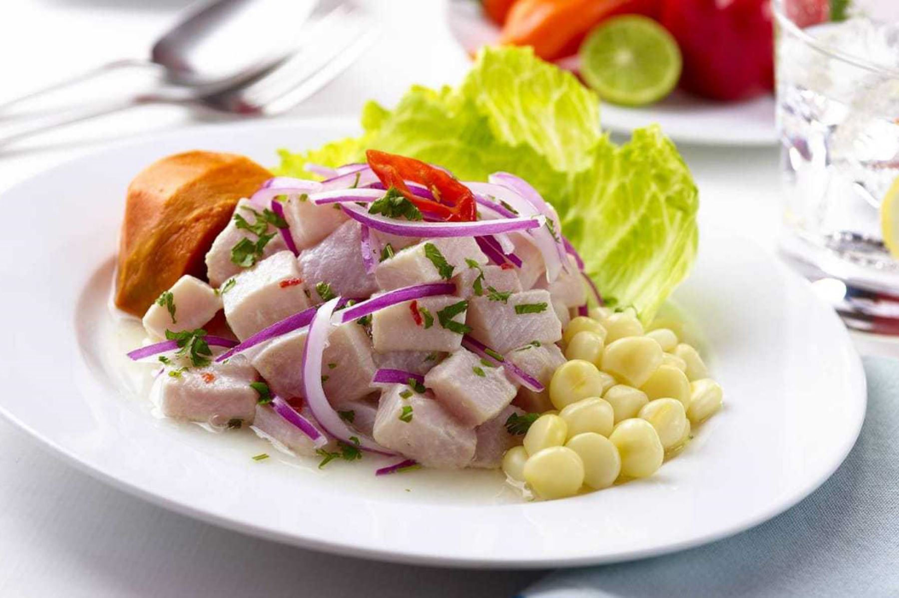

Cebiche

Descripción del plato
El tradicional cebiche peruano se prepara con pescado fresco, limones, cebollas, ajíes picantes, y cilantro fresco.
El cebiche, también es correcto escribir ceviche o seviche, típicamente se prepara con pescado o marisco, el mismo
que se curte con jugo de limón. La acidez del jugo de limón ayuda a “cocinar” al pescado. Hay que aclarar que no todos
los tipos de cebiches se preparan con mariscos, y no todos los cebiches se preparan con mariscos crudos. Sin embargo,
el clásico y tradicional cebiche de pescado peruano si se prepara con pescado fresco crudo y es necesario curtirlo en
jugo de limón. Por esto es muy importante usar pescado bien fresco y de alta calidad para preparar cebiche.
Ingredientes
- 700 g de filetes de pescado fresco.
- 1 cebolla roja cortada en rodajas.
- 1 taza de jugo de limón recién exprimido.
- 1 ají limo picado sin semillas y desvenado.
- 2 o 3 ramitas de culantro fresco picado al gusto.
- Sal al gusto.
Guarniciones para acompañar el cebiche:
- Hojas de lechuga.
- Maíz tostado.
- Choclo hervido.
- Camote.
Preparación
- Corte el pescado en cubos pequeños y colóquelos en un recipiente de vidrio. Cubra los pedazos de pescados con agua
bien fría y 1 cucharada de sal, tape y refrigere mientras se prepara la cebolla y el jugo de los limones.
- Frote las rodajas de cebolla con 1/2 cucharada de sal y enjuague con agua fría.
- Enjuague el pescado para eliminar la sal.
- Ponga los cubos de pescado, la mitada de las rodajas de cebolla, las ramas de cilantro, y los ajíes en un recipiente
de vidrio y vierta el jugo de limón sobre los ingredientes. Espolvoree con un poco de sal. Para minimizar la acidez
del limón se puede agregar unos cubitos de hielo a la mezcla.
- Cubra y refrigere durante unos 5-15 minutos o hasta que el pescado empiece a blanquearse. En caso de usar limón sutil
el pescado se curtirá más rápido.
- Retire las ramitas de cilantro y los ajíes de la mezcla del cebiche. Pruebe el cebiche de pescado y rectifique la sal
si es necesario.
- Para servir ponga el cebiche en cada recipiente, ya sea un plato o bol, agregue un poco de las rodajas de cebolla, el
cilantro picado, y aji picadito al gusto.
- Sirva inmediatamente con su elección de guarniciones.
Regresar a la página principal.